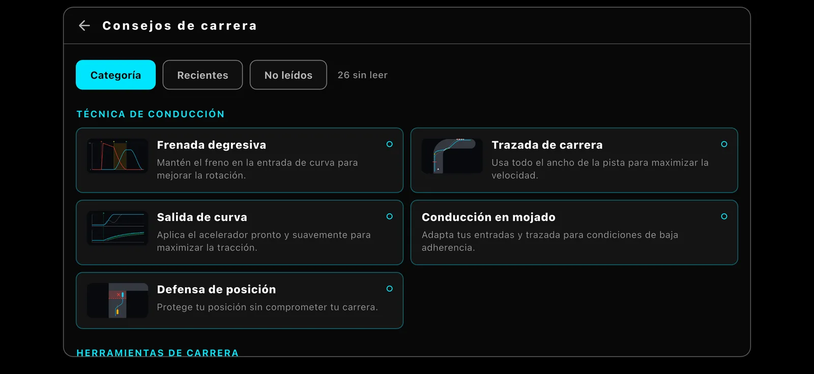
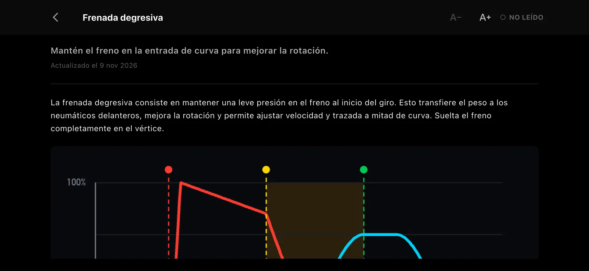

Cómo funciona
Consejos de carrera
Lecciones breves y prácticas sobre técnica de conducción, herramientas de carrera, preparación y reglas, cada una con un ejercicio.
Cuatro grupos de consejos
Abre Consejos de carrera desde la pantalla de inicio. No necesitas el juego ni una sesión en marcha.
- Técnica de conducción: frenada en apoyo (trail braking), la trazada, la salida de curva, conducir en mojado, defender.
- Herramientas de carrera: ERS, DRS, gestión de energía en F1 26, combustible, gestión de neumáticos, cómo leer tu delta.
- Preparación: reglajes, planificación de carrera y de fin de semana, preparación de la clasificación, estrategia de paradas.
- Reglas & penalizaciones: compuestos C0–C6, modos de batería 2026, límites de pista y más.

Leer, practicar, marcar como leído
- Toca un consejo para abrirlo: un resumen de una línea y después la explicación. A− y A+ arriba reducen o amplían el texto; JMD guarda tu elección para todos los consejos.
- Usa el recuadro PRACTICAR. Te da una cosa concreta que probar en tu próxima sesión.
- Toca Marcar como leído al terminar. El punto del consejo se vuelve verde en la lista, para que veas lo que te queda. Toca Marcar como no leído para deshacerlo.

Los nuevos consejos llegan solos
Muchos consejos incluyen ahora diagramas, y la colección se actualiza con regularidad. Al abrir la app, comprueba si hay consejos nuevos y los descarga en español, inglés y francés; desliza la lista hacia abajo para comprobarlo de nuevo. Tus consejos siguen disponibles sin conexión.
- Ordena por Categoría, Recientes (últimas actualizaciones primero) o No leídos.
- Un consejo nuevo, o uno que ha cambiado desde que lo leíste, vuelve a aparecer como no leído, así no se te escapa nada.
Gratis y Jax Pro
Todo lo que describe esta guía es gratis. No necesitas suscripción.